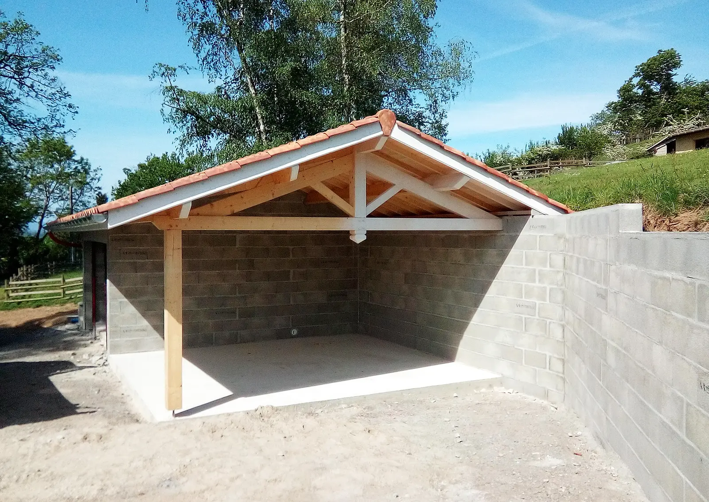
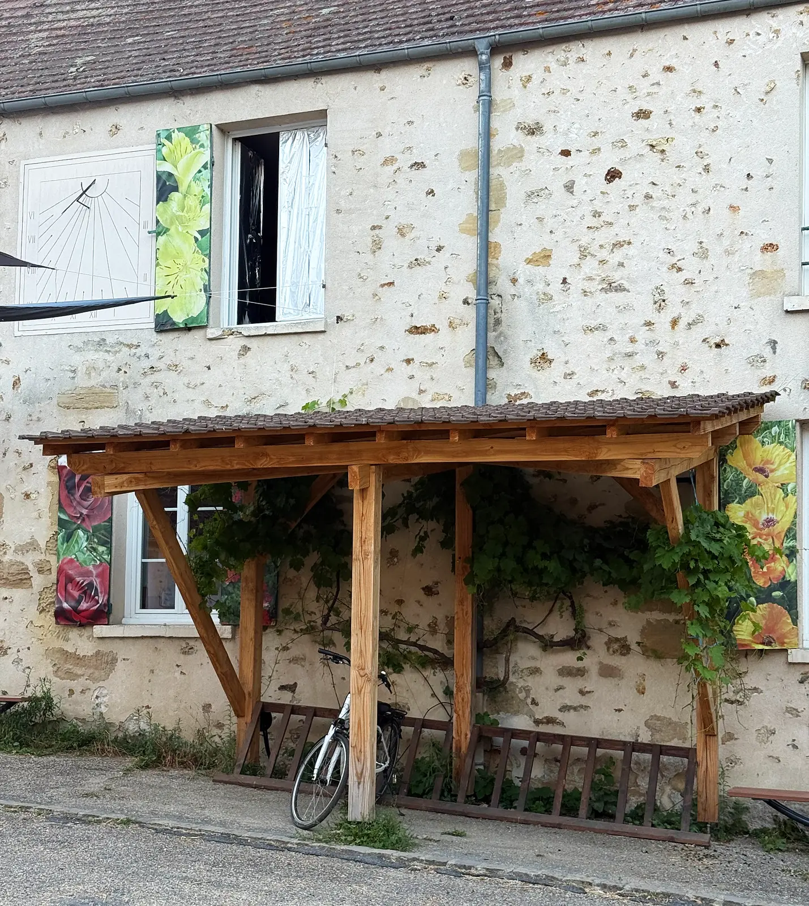
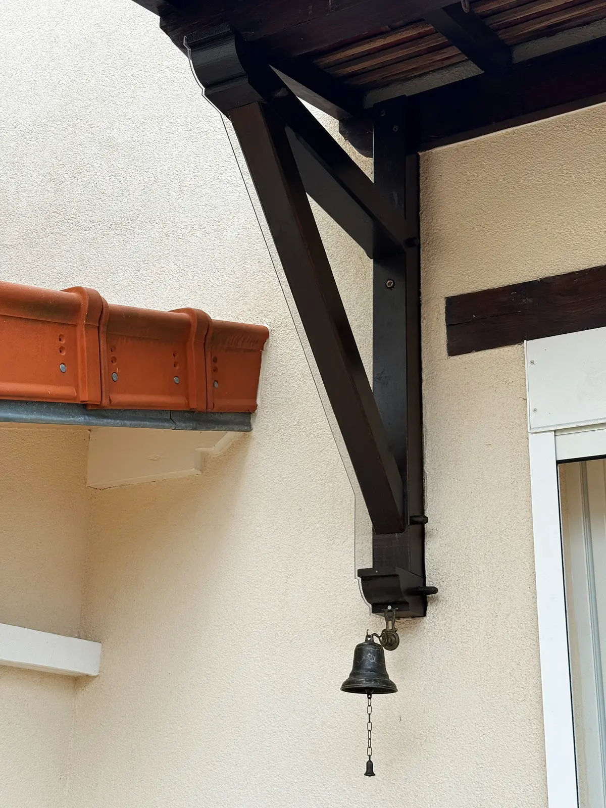

Douglas
Résineux robuste cultivé en France, naturellement durable. Idéal pour la charpente, l'ossature et le bardage.

Pergola, auvent d'entrée, carport ou abri de jardin : des ouvrages en bois massif dessinés sur mesure pour s'accorder avec l'architecture de votre maison.
Une belle pergola ou un auvent réussi, c'est d'abord une question de proportions. Nous dessinons chaque ouvrage en fonction de votre façade, de l'orientation et de l'usage : se protéger du soleil, abriter une entrée, garer une voiture ou ranger le matériel de jardin.
Poteaux, jambes de force, assemblages apparents : le bois massif est travaillé avec soin, pour un rendu durable et élégant.


En extérieur, le Douglas, le chêne et le châtaignier, tous trois locaux, résistent bien et vieillissent avec élégance. Nous proposons aussi du bois de réemploi quand c'est possible.
Résineux robuste cultivé en France, naturellement durable. Idéal pour la charpente, l'ossature et le bardage.
Le bois noble de la charpente traditionnelle : dense, solide, superbe en poutres apparentes.
Résistant aux intempéries sans traitement chimique : bardages, terrasses, ouvrages extérieurs.
Bois clair, dense et élégant, apprécié notamment pour les terrasses.
Dès que c'est possible, nous donnons une seconde vie à des bois de qualité : moins de déchets, et des pièces qui ont une histoire.
Cela dépend de la surface, de la présence d'une toiture et de votre commune : une déclaration préalable est souvent demandée, et les secteurs protégés ont leurs propres règles. Nous vous aidons à vérifier les démarches auprès de votre mairie.
Le Douglas, le chêne et le châtaignier sont des bois locaux qui résistent bien en extérieur. Le choix dépend de l'aspect souhaité et de votre budget : nous vous conseillons lors de la visite.
Oui. Une pergola peut rester ouverte ou être couverte, selon l'usage que vous en ferez. La couverture se choisit en fonction de la maison et des règles d'urbanisme de votre commune.
Nous venons voir votre maison, écoutons votre projet, puis vous remettons un devis détaillé, poste par poste.